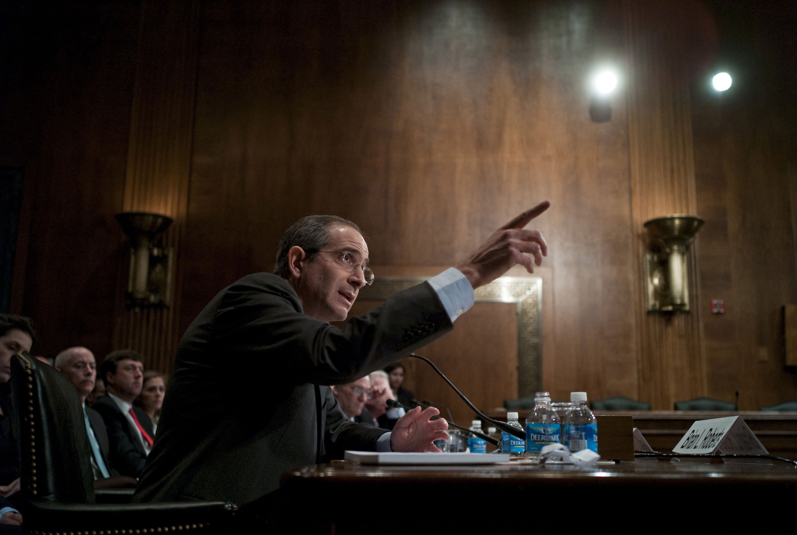

Figure 13.1
In the late 19th century, Andrew Carnegie had a brilliant idea. Instead of buying materials and manufacturing steel, Carnegie bought up mines, railways, and all other aspects of the industry, pioneering a business model that later became known as vertical integration, in which a company owns both its suppliers and buyers. Gathering, manufacturing, and delivering raw materials and finished goods all under the control of a single corporation allowed Carnegie’s profits to soar by cutting out the middleman and allowing him to drive the competition out of certain markets. A century later, this same strategy still works; it may not drive industrialization, but its effects are just as powerful.
In late 2009, cable company Comcast announced a plan to purchase a controlling ownership stake in NBC Universal to allow Comcast to join with NBC.Tim Arango, “G.E. Makes It Official: NBC Will Go to Comcast,” New York Times, December 4, 2009, http://www.nytimes.com/2009/12/04/business/media/04nbc.html. This multibillion-dollar deal would give Comcast a 51 percent stake in the company, with present owners General Electric (GE) retaining control of the other 49 percent. The proposed venture brought together all NBC Universal content—including Universal Pictures and Focus Features; Spanish-language network Telemundo and the cable networks USA, Bravo, CNBC, and MSNBC—with Comcast’s cable channels, which include E! Entertainment, the Golf Channel, and the sports network Versus. Already one of the nation’s largest cable and broadband Internet providers, Comcast would then conceivably have the power to restrict these hugely popular NBC-owned networks to its own cable service, thus forcing consumers to adopt Comcast in order to watch them, or to charge huge premiums to competitors’ cable subscribers for the channels, thereby making their own cable service more desirable.
The most concerning—or beneficial, for Comcast—aspect of this merger is how it may integrate online content with traditional cable media. NBC Universal cofounded Hulu, the second-largest online video channel in the United States. If Comcast sees ad-driven sites such as Hulu as a threat to its cable business, then ownership over the online video portal would allow Comcast to restrict the site and all of NBC’s online content to its own cable subscribers. In effect, Comcast would be allowed to create a subscription model for Internet content, just as it sells subscriptions for cable content. For years, viewers have been able to pick and choose from a wide variety of sources, selecting only the online content that they want; now, some fear that Comcast could bring the problems of a cable subscription—hundred of channels but only some worth watching—to the Internet.Alex Chasick, “Why a Comcast/NBC Merger Is Bad News,” Consumerist (blog), December 3, 2009, http://consumerist.com/2009/12/why-a-comcastnbc-merger-is-bad-news.html.
This merger has the potential to reshape the way that mass media is produced and distributed to consumers. When most Internet users subscribed to America Online (AOL), the company set up its own site simply as a portal to other companies’ content. The proposed integration of content producers and service providers, however, allows for unprecedented control of Internet content. Net neutrality poses another problem; Comcast could potentially grant its own content channels— such as a subscription-only version of Hulu— privileges over competing channels. While this does not necessarily pose a problem when there is healthy competition, in many regions Comcast is the only provider of broadband Internet, thus raising concerns of a potential monopoly. No matter what happens with this particular merger, it seems that the economics of mass media are becoming even more tangled as the rapid rise of new technology threatens to transform or replace traditional media outlets.